Board members
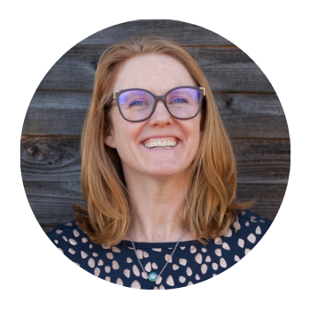
Amanda Barney
Teem Fish Monitoring, Canada
Teem Fish Monitoring is a fisheries electronic monitoring technology company dedicated to bringing the best automation tools and efficiencies to our data collection and analysis processes
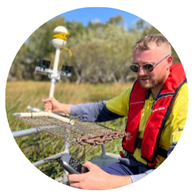
Andrew J Jansen
Department of Climate Change, Energy, Environment and Water, Australia
Focusing at the intersection of deep learning and ecology to develop wildlife monitoring solutions using a range of remote sensing technologies (e.g. drones, underwater cameras, multi-spectral sensors, IoT Edge, cloud computing)

Asta Audzijonyte
(co-founder)
University of Tasmania, Australia & Nature Research Centre, Lithuania
ML models for citizen science and social media data, especially models for fish size determination
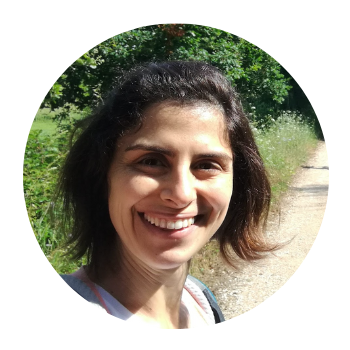
Catarina Silva
(co-founder)
University of Coimbra, Portugal
ML models for automatic identification of species and sizes from images; multidisciplinary and innovative methods to fisheries research; marine population dynamics
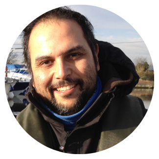
Kieran Hyder
CEFAS, UK
Application of science to support policy and management of fisheries focusing on the social, economic, and biological impacts of marine recreational fisheries; novel approaches to support fisheries monitoring, modelling, assessment and management
Kim Friedman
FAO, Italy
Lisa Kellogg
Virginia Institute of Marine Science, USA
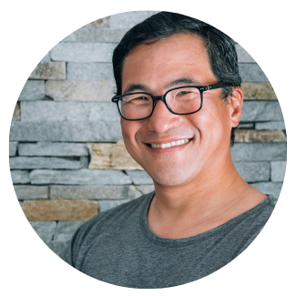
Luyen Chou
GotOne fishing app, USA
GotOne is a fishing log app that empowers recreational anglers with the data they need to catch more fish and conserve our fisheries
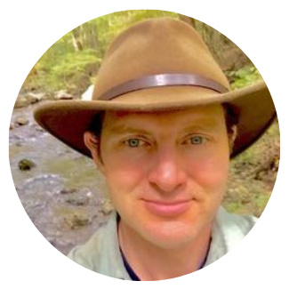
Nathaniel “Than” Hitt
West Virginia Rivers Coalition, USA
Freshwater biologist with expertise in fisheries, water quality, climate change, and open-science strategies
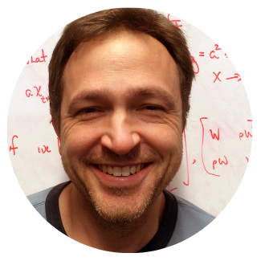
Steve Munch
University of California, Santa Cruz, USA
I use nonlinear dynamics, optimal control, and machine learning to develop data-driven tools for ecosystem management
General members
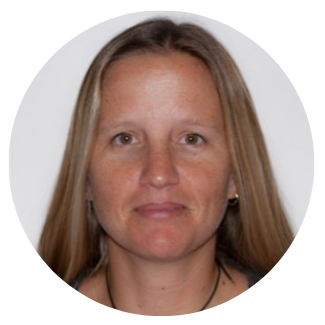
Alyssa Marshell
University of Tasmania, Australia
AI for automatic identification of fish species and sizes from video and images; automate annual monitoring of fisheries species; increase length data available for length-based annual stock assessments
Barbara Block
Stanford University, USA
Ben Letcher
U.S. Geological Survey, USA
Christian Skov
National Institute of Aquatic Resources, Denmark
Dan Morris
Google AI for Nature and Society, USA
Eelke Folmer
Aeria

Ercan Avsar
Technical University of Denmark, Denmark
Underwater video processing for automatic species recognition; edge computing and real-time object detection with deep learning models
Iñaki Quincoces
AZTI, Spain
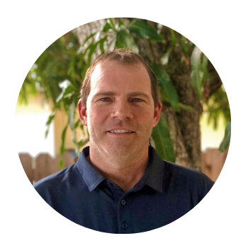
Jimmy Freese
Ai.Fish, USA
Ai.Fish is a Computer Vision and Artificial Intelligence company with significant ongoing R&D in data science, deep learning, convolutional neural networks and object detection and tracking to address problems in marine sustainability and conservation.
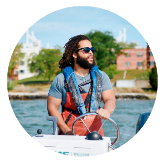
Jordan Lynch
Virginia Institute of Marine Science, USA
My interests lie in improving shellfish aquaculture production, quality, profitability, and environmental sustainability through applied research and workforce development.
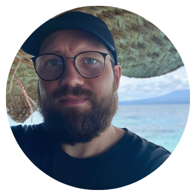
Julian Lilkendey
Auckland University of Technology, New Zealand
Harnessing AI to identify, track, and analyse the movements of fish, my research delves into their energetic and behavioural adaptations to challenging marine environments.
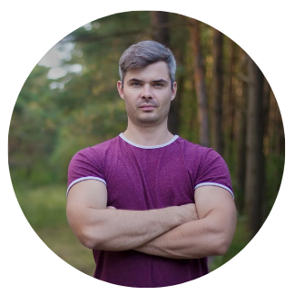
Justas Dainys
Nature Research Centre, Lithuania
My main research interests are related to the study of eel population status, biological indicators and spawning migrations using telemetry methods, as well as the application of novel and innovative methods for assessing the impact of recreational fishing on fish populations.
Mark Sudul
Archipelago
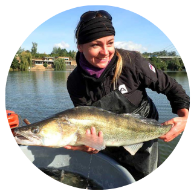
Michaela Holubová
Biology Centre CAS, Czech Republic
Main focus of my interest is the behavioral ecology of freshwater fish via a non-invasive approach involving UVC.
Noel Clark
Colorado State University, USA
Osamu Kishida
Hokkaido University, Japan
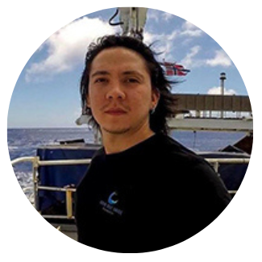
Paul Clerkin
Virginia Institute of Marine Science, USA
I am a taxonomist exploring innovative ways to enhance identification tools and develop AI solutions to improve the accuracy of species identification and data collection for deep-sea sharks
Raiana McKinney
The Pew Charitable Trusts
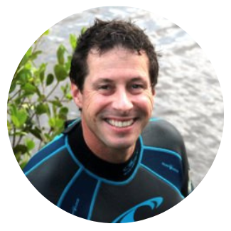
Rod Connolly
Griffith University
I am the Director of FishID and the Global Wetlands Project. We develop AI tools and coordinated monitoring systems for aquatic ecosystems.
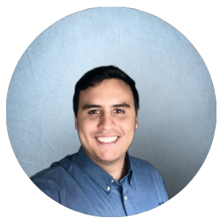
Sebastian Lopez-Marcano
Griffith University
I am a data scientist developing AI solutions for AgTech, conservation and education.

Sebastian Uhlmann
Dr Snapper, Flanders Research Institute for Agriculture, Fisheries and Food (ILVO), Vrije Universiteit Brussels (VUB)
I am a fisheries biologist with an interest in bycatch, discards, fish welfare, post-release survival and hook-less fishing by means of underwater camera only.
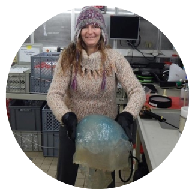
Sophie Pitois
CEFAS, UK
I’m a Zooplankton ecologist focussing on optimizing imaging tools for automated monitoring; in particular the use of AI methods for real-time data collection and visualisation
Thor Veen
Aeria
Tim Sartwell
NOAA Fisheries
Victor Anton
Wildlife.ai, New Zealand
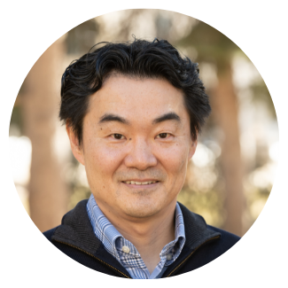
Yoichiro Kanno
Colorado State University, USA
I am a stream fish ecologist working on projects in USA and Japan